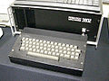

To get the ball in the pocket, you must imagine the angle it would take. By playing, you find out which number makes which angle. This should help you know your angles!
The numbers are:
This way of measuring angles is called bearings and is used by orienteers, ships and planes to find their way.
This program was first written in 1979 by a maths teacher, Richard Millwood, for one of the first computers used in schools, the Research Machines 380Z.
It later became part of the SMILE suite of programs used in schools to learn about angles ('Flip' to see how the older version worked).
Play with it to learn about the numbers used for angles.
This 2012 version can also be used to investigate the physics of friction and restitution.
Read more at the:
National Archive of Educational Computing.
Friction and Restitution are the key variables affecting the ball's movement.
Friction is the force resisting the ball's movement on the table. With Friction set to 1.00, the ball will never stop unless it is pocketed.
Restitution is the energy absorbed by the cushions. With restitution set to 1.00, no energy is lost in hitting the cushion - it is an elastic collosion.
Experiment with different values:
For further reference from Wikipedia:
Snooker was first developed using BASIC (Beginners All-purpose Symbolic Instruction Code) which was a common programming language for early microcomputers.
The BASIC can be found on the QuiteBASIC website.
This version is created using:
The code can be found on the GitHub website.